想当初，在炎龙之家看到炎2七星拱斗挑战赛时，多想去参加啊
可惜，那时候正在准备高考，没有空余时间去玩这个
现在好了，有时间了，玩了一遍，觉得难度还不错，作为比赛的确不过分
突然心血来潮，于是顺便写了份攻略，可惜前面十三关本来有份更齐全的攻略，但电脑坏了，只有凭记忆重新写了一份
看到的朋友，把里面不足的地方指点一下
帖图也有不少地方没有完善，因为用DOS不知道怎么的没法截图，只好用QQ来截了，有兴趣的朋友可以找我要存档。
有兴趣的朋友加我QQ 584371686 记得注明申请，我很少加陌生人的哦~呵呵
亚雷斯0分，玛琳3分，哈瓦特2分，罗兰4分，巴拿罗西亚3分，卡里斯4分，罗德曼4分，合计20分
选亚雷斯是为了第二关能全救村民，毕竟在人都死光，没人帮忙的情况下，好像就亚雷斯能够胜任
选玛林是因为传送术，唯一一个能在转前就有传送的人，而且还会再生术
选老爹，第一攻击手撒，血多皮厚攻高，虽然比起老爹来，小塞更适合担任第一攻手的位置，而且两人的分数一样，但是老爹还会再生术，可以限制玛林的等级，同时血和防不是小塞能比的，再就是渥德一出来就50级。按照评分时计算等级是转后30级，升级空间更小
剩下的罗兰和罗德曼是分数限制
巴拿龙和卡里斯本来可以换成老寇和达克塞的，不过，比起后面一组来，前面一组的实力很明显高些
等级总和是175才能拿满分，所以除亚雷斯和老爹满40外，剩下的人平均等级最高19，罗德曼和卡里斯一出来就是20，所以玛琳和巴拿罗西亚升多少级是关键
所有非七星队员丢/转移掉武器，上去送死
第一关
这关要么把亚雷斯练到7级以上，要么去秘密商店买把长戟，这样下关就可以秒援军了，不然光靠亚雷斯也没办法救全，毕竟除了索尔，剩下的人都得在这关死掉
刺矛别卖了，前面某些关卡可以练级
第二关
第2关 全救村民
亚雷斯走到上方援兵出现位置的下方，估计是（16，5）（看图，已经死光了），然后去给左边那个村民吃个药水，其实也可以不出，保险
索尔等敌人死得差不多了再去捡箱子
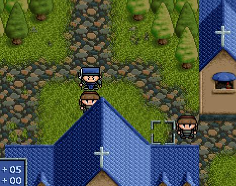
第三关
希莉亚去捡长弓
亚雷斯和索尔上去，救不救铁诺看大家的爱好，等援兵出现后，从右边杀到右上角，准备堵路。亚雷斯站索尔左上45度角方向向上，这样卡位那些行动有限的士兵就没法攻击到索尔
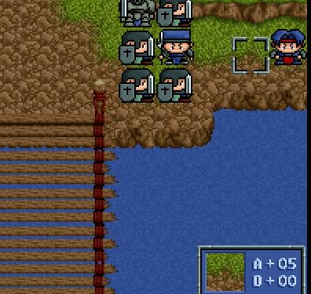
第四关
这关可以穿件差点的衣服，刚好能反击强盗就行了（不想反击也行）。把回旋斧买着，这把斧头可是跟着老爹混到最后一关的武器，没魔神斧不要紧，但不能没这把
向上，索尔捡宝石
第二回合 亚雷斯走到左边法师的下面，杀掉右边那个法师
第三回合 亚雷斯退后一步，杀掉法师
第四回合 往右边走，准备向下，杀掉强盗
这时候那几个兽人就会出现，没事，索尔不被攻击到就行，亚雷斯刚好可以走到下面来秒掉那个兽人，这样就安全了
这关有个风精拿，给玛林吃
第五关
依靠房子的转角，用亚雷斯挡住玛琳，等到敌人死得差不多时索尔再去捡箱子
法师的火炎术烧得不多，可以给玛林升级
最后留法师和僧侣给玛林砍了升，可以把敌军引到右下角的房屋小巷子里，依靠树林减攻加防的效果给亚雷斯和玛林升级
这关玛林最好升到20，亚雷斯24以上就足够了
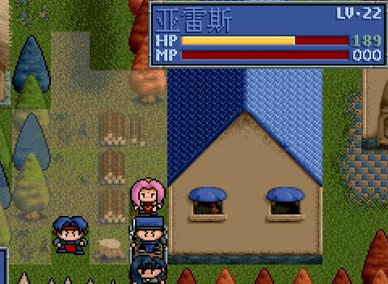
第六关
第6关，杀莱汀
最上面的兵可以不管的，只需要把两边的弓手干掉就行
在莱汀骑士团出现那回合，赶到图上标的位置，玛琳离亚雷斯三四步的位置，先不要下去，不然就会把莱汀引到亚雷斯身边，而且20级的玛林很难承受莱汀+2个骑士的攻击，下一回合才下去
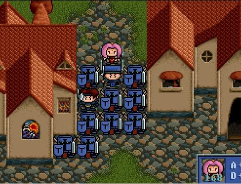
第七关
简单，没救凯丽，反正她不用上场
第八关
玛林和亚雷斯一左一右堵在那路口，而且还可以拿那些法师来练级，这关有个风精，给玛林吃
这关结束后，亚雷斯满40，转龙骑士
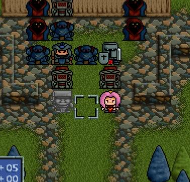
第九关
简单
这关结束玛林满40，转圣者
第十关
第10关，阵亡骑兵数≤1个
第一回合 亚雷斯上去砍掉左边的法师，莱汀走到亚雷斯右下的位置，玛林向上
第二回合 玛林先杀武士，接着亚雷斯过去站法师下方砍法师，莱汀走过去把先锋矛给亚雷斯
第三回合 玛林直接向左上，亚雷斯右上，都不需要攻击的，莱汀则向正上方走去（这回合也可以让玛林把那个武士挂掉），留下的武士，2个僧侣和2个射手都是为了拖住那些支援的骑兵
接下来就简单了，那些骑兵会跟着玛林走左边，亚雷斯的右边只需要砍掉前面的武士和法师，和后面的一个武士就够了，留剩下的武士和射手是为了最后拖回合数了有时间捡箱子，最下面的四个箱子给索尔去捡
中间部分亚雷斯要上去杀掉那两个法师和一个武士，留五个敌人在那里拖住骑兵
皇帝和索菲亚旁边的那两个武士也不用管的，直接上去杀掉地魔神和最后两个法师，装备了先锋矛的亚雷斯三回合就能解决掉地魔神，接着挂掉周围的武士和捡箱子就行了
地魔神死的时候，都不会命令那两个武士去攻击皇帝和索菲亚，所以骑兵上来后即使攻击他们也只会产生反击，而不会主动攻击，不过回合数一到，地魔神即使死了还是会命令的，不过那时候那两个武士估计也西归了
运气好，我这关骑兵全救了
第十一关
传送亚雷斯过去捡星之眼，玛林把索尔传到没人打得到的地方
第十二关
把亚雷斯传过去挡下兽人，以免小米被攻击到，玛林传完后全力向上走，珊走到左边洞窟的上方，准备把那些支援的敌军引上去，索尔走到最下面即可
第二回合刚开始时，注意一下，右边洞那里没攻击的射手旁边那个兽人身上有风精，准备在下回合挂掉它就行，这关的风精留着准备给老爹吃
因为贝克威没参战，小米会乱跑，所以玛林上来是准备给小米加防的，血看情况加，因为小米的再生药不少，同时又可以限制他攻击，玛林以后就尽量不要升级了，这关之前升3级可以学会再生
这关结束后把精灵披风给小米穿上，卖掉他的武器，同时给他买四五个再生药
第十三关
第13关，救下精灵数≥4个
这关要注意多S/L，不管敌人还是精灵，本来不应该杀死的或不幸被爆击杀掉的情况都要重新来，不然那些精灵会冲过头
第一回合 把亚雷斯传到中间帐篷那里，杀掉那个法师（图），小米往最下面的帐篷方向走去，开始就会有四个精灵被那个捡心眼之书的兽人给吸引过去
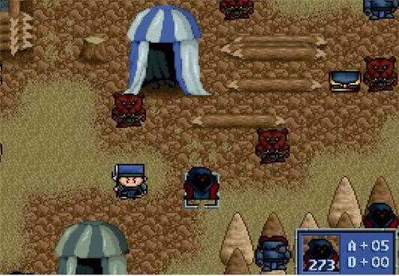
第二回合 玛林往亚雷斯那里走去，亚雷斯上去，挂掉精灵身边那个兽人，小米继续
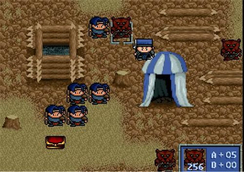
第三回合 小米走过去给那个精灵加血，接着这回合那些兽人会把那个精灵挂掉，亚雷斯尽量堵住那些兽人，优先杀射手
第四回合 小米往玛林走去，这样玛林走过去后，刚好跟小米隔一格，老爹这回合出现，那下面帐篷杀掉精灵的那三个兽人就会被老爹吸引过去
第五回合 传送小米过去捡火之眼
接下来小米的任务就是吸引那两个靠得近的法师，至少要消耗完其中一个的MP，同时依靠那几个再生药，可以把援军也吸引过去，亚雷斯的任务就是守好下面和右边的路口，尽量让一开始就投入前线的精灵坚持八个回合以上
等到小米挂掉时，亚雷斯和玛林也控制住了帐篷堆的局势，留两个射手拖住最后那四五只精灵，亚雷斯过去先砍掉兽人队长。注意别让老爹冲快了，有玛林在，一般最后没什么危险
这关我救了五只精灵~
第十四关
把回旋斧给老爹装上，带上几件不同的衣服，必要时裸体+防御术
站右边那个缺口位置，2个人就能堵住，练个五六十回合老爹就能满40级了，索尔用传送术直接传到右上方的树林去
老爹完了转魔战士，前面有2个风精给老爹吃。行动6
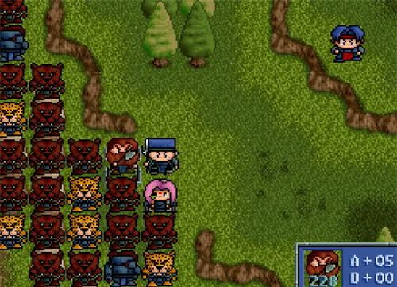
第十五关
第15关，阵亡豹人数≤1个
第一回合 传送老爹到进攻的兽人前面，随便攻击，边打边往湖的折角方向退
第二回合 传送亚雷斯到下面进攻的兽人，杀掉兽人队长，亚雷斯只需要对付兽人队长即可，第六或七回合就可以往运送宝物的兽人方向走了
第三回合 传送索尔到豹人退守方向的断桥那里，尽量往最里面靠
只要老爹和亚雷斯堵得好，能过来的兽人不超过三只，而且都是低级的兽人，这边运气差到极点才会死一只豹人
玛琳传完后就迅速跟老爹集合，准备挡路了，别拿对方法师练级，玛琳要尽量克制等级，这关人尽量给老爹杀，为第十七关做准备，老爹会再生术可以在下关拼命练级
这关完后我买了30来个力量药水，不要攒钱，没办法，速度药水和力量药水都给老爹吃，留十来个给亚雷斯。耐力药水和生命之宝都给了玛琳，主要是怕她等级不够，坚持不了
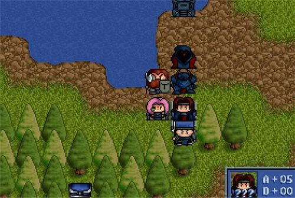
第十六关
第16关，阵亡士兵数≤1个
第一回合 传送老爹到下面，杀掉最上面的射手，亚雷斯直接过去攻击上面的黑暗武士
第二回合 传送小塞到右边那条小路，堵住右边下来的敌人，不装备武器，免得坏了规矩，穿衣服就行了，最多带两个再生药坚持下，别忘记把他牺牲掉
接下来就简单了，杀法师优先，然后是武士和兽人队长，注意别被射手给毒了，人数不够，一般正常情况下士兵会阵亡一个，不过依然达标，不要紧
这关不必担心回合数的，毕竟蜜蒂不需要加入，把最后一批敌人中的法师留给老爹练练级
第十七关
第17关，救下士兵数≥1个
这关亚雷斯和索尔会出现在下面，老爹在右边，玛琳在上方。箱子留最后捡。
开始把上关获得的暗杀服给蜜蒂穿上（记得拿回来），亚雷斯堵在前面砍掉那些武士和兽人队长，留三只左右的兽人队长过来，让他们牵制支援的那几个士兵
老爹必要时装备回旋斧，通过前面往下，路上用顺便杀掉那2个武士和回旋斧杀上一层的法师，顺便把下面右边的法师也挂了
玛琳往上捡箱子，把那几个兽人引上去后再下来点，堵了让那几个兽人就在上方，让它们下不来，接着玛琳就可以休息了。蜜蒂站亚雷斯后面的下一格，即使有兽人过来了蜜蒂也不需要攻击，最好把武器给索尔，让蜜蒂前期不装备武器
接下来就简单了，拼命杀吧，法师优先，楼梯上有4个武士，留2个拖住那些士兵，这时候亚雷斯和老爹都是一刀一个，冰魔神让他们联手攻击也只是两回合就能解决
下面的被杀完后，剩下的就是玛琳堵住的兽人。那些士兵就会原地休息了，这关我救了4个，超额完成，本来可以留6个，有个法师忘杀了~
这关又有一个风精，给老爹吃，行动变7。。结束后老爹20+，玛琳10，亚雷斯30+
第十八关
这关我真受不了约拿这老头子，走到半路了还停下来加防加速......
实在没办法，根本不可能全歼敌人，除非能让他不停下来（有高手的话自己去尝试）。第八回合时传送老爹过去，一刀秒头领，过关~
第十九关
这关巴拿龙会加入，第四位人员终于出现了
全体躲到左下角去，把索尔用大十字的样子围起来，亚雷斯在外面晃悠，杀狙击手和法师僧侣，顺便捡箱子。力量药水那个箱子可以传送兰斯洛特过去捡
巴拿龙站上面，把暗杀服给他穿，老爹站中间，玛琳站下面，玛琳休息即可。约拿随时可以死掉
第二十关
第20关，阵亡精灵数≤1个
传送老爹和巴拿龙过去，堵住路口，老爹只管给精灵加血，巴拿龙下去K掉那个法师，亚雷斯去捡暗之眼
这关我一个精灵都没死，简单。
第二十一关
第21关，阵亡精灵数≤1个
这关罗兰加入（留些生命之实和耐力药水给罗兰，最好能把她的HP加到450以上，等级最多升14级后就不能升了）
开始先把亚雷斯传送到祭坛那里，挡住敌军，接着传索尔到希尔法身边，索尔则用光之眼给受伤的精灵加血。反正那几个眼睛要多多利用。玛琳传完后往下面来几步就行，吸引左边的恶魔援军
老爹一开始可以往祭坛冲，也可以先杀掉那个法师了再下来，巴拿龙（暗之眼带着，有时候能用上）则直接飞到祭坛上来。谢多走上去捡生命之实，记得给他买一个神圣之水，用他来吸引几个骑士两三回合，或者消耗恶魔的MP
亚雷斯挡住那里，尽量挡住，同时也不要让精灵走下来，超过那两个石碑。打到一定程度时，留三四个敌军，让精灵和罗兰来解决，这样可以防止敌军下来，多S/L几次，等到亚雷斯可以抽空下来杀法师时，大局也差不多定了
这关我精灵全部救了，没一个挂掉
第二十二关
这关亚雷斯和玛琳左边堵着，老爹和巴拿龙右边，很容易就过了，失误的话S/L，风精给亚雷斯吃了，现在行动10（5555~我给老爹吃了，害我第二十四关试了N次）
第二十三关
这关卡里斯和罗德曼加入（直接拆掉他们的武器，再还给他们，必要时装上，反正不能让他们俩升级），这样人就齐全了
老爹和亚雷斯把好的宝物拿到手，分配完后，传送过去，两回合解决，记得要在十五回合内搞定。把最好的防具给罗兰和希尔法
这关结束前，除了玛琳，亚雷斯，老爹，罗兰（一般不攻击）之外，把剩下的人的武器弄成非装备状态，这样就不会引起反击，可以限制等级，现在已经没有几级可以让你升了，把剩下的留给玛琳吧
第二十四关
七星的限制人员要求,无疑使这关成为最难打的，这关我S/L不知道多少次，终于搞定了
第一回合 传送亚雷斯到右上，杀掉大恶魔，尽量靠近下边，老爹去捡风精，顺便吃了，其余人布阵，把索尔围在中间，形成小十字（我的布阵方式是：巴拿龙上面，三面靠石柱，卡里斯右边，罗兰下面，右边是希尔法和罗德曼）
第二回合 亚雷斯往右下的恶魔过去，准备杀掉它，玛琳走到右上，范围能让防御术加到罗兰即可
接下来等左边的两个大恶魔过来，一般龟缩了不出击的话，大恶魔会走到卡里斯的45度角方向，接着杀掉他们，老爹到左上去
亚雷斯的任务就是守好下面两边，消耗恶魔的MP，那些恶魔最好别杀了，恶魔的攻击力没有龙人战士高，这样围住罗兰一般情况下挨三下不会死的，而且敌军命中率不高，不行就S/L了
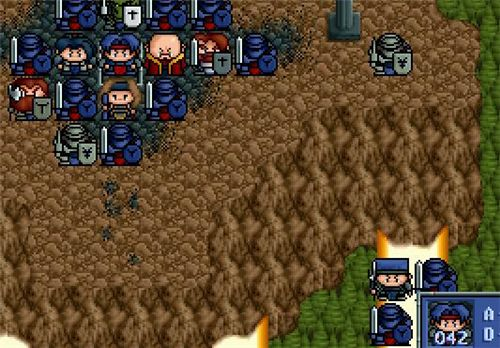
希尔法死后，罗德曼就要站到原先希尔法的位置
等龙骑士出来后，亚雷斯的任务就重了，除了老爹杀一只外，剩下三只基本就要考亚雷斯了，一般希尔法能坚持到龙骑士近身时（看图吧）
龙人法师出来后，老爹和玛琳各拖住和消耗左右两边上方的龙人法师和恶魔的MP，亚雷斯先杀掉左下的，再杀右下的，一般右下的龙人法师会靠近后使用地震术（亚雷斯行动超过10的话，或许能早一步干掉它），自求多福吧~我就是运气好MISS了过的，不行多来几次了。只要两边的龙人法师一死，这关大局已定
这关有不少力量之类的药水，风精也有一个，平均分配吧，老爹和亚雷斯都行动10.....炎龙的BUG让怪攻击人时，即使不反击，偶尔也会出现获得经验的情况，这时候就要重取进度了
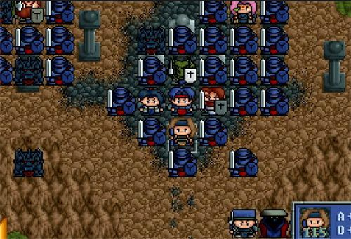
第二十五关
第25关，救下全部龙兵
这关可以说是救援系列最费脑筋的~~
第一回合 老寇攻击下面的龙战士，一定要出爆击或连击，不行就L，不然的话别指望全部救下来！！老爹上来攻击下面的龙战士，玛琳传送亚雷斯到左边那个龙战士的上方。卡里斯往玛琳方向走，剩下的去玛琳上方一些的位置
接着那些龙剑士会攻击那个被老寇打的龙战士，一般两个就会把它解决，接着有一个会攻击龙人法师，接着下回合，龙法师或者咒杀亚雷斯（死不了）或者施毒，龙战士会攻击那个被龙人法师反击的龙剑士，一般正常情况下，会剩10来血，不行就重来
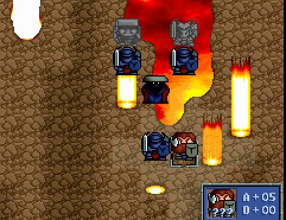
第二回合 老寇攻击剩的那个龙战士，老爹用再生术给龙剑士加血，亚雷斯去左边，站在那个龙骑士的右边顺便杀了他，玛琳传送卡里斯到亚雷斯左边，这样可以防止龙剑士过来。接着龙剑士会攻击剩下的那两个小兵，一般这时都不会有什么危险
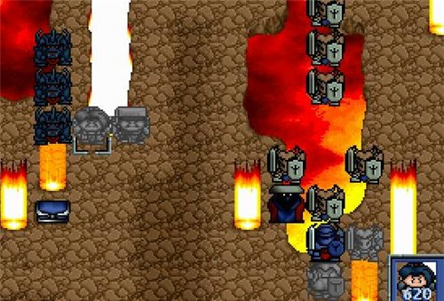
第三回合 老寇可以往左下的方向逃命了，卡里斯往下来一些加血（或直接加血），亚雷斯加血或攻击均可，老爹去右边杀掉跑在最前面的龙骑士，顺便靠过去些，引诱那些恶魔放雷
接着就安全了，老寇（卸下武器）和索尔汇合，老爹和亚雷斯上去砍，剩下的人在下面休息,记得把盖亚的最终防具拿到手,准备给渥德用
第二十六关
这关开始前记得要复活悠妮，不然就等着GAME OVER，除老爹，亚雷斯，玛琳外，剩下人把武器卖掉，卖满神圣之水，另外带几根龙之杖（必要时使用攻击，不加经验的）
先让亚雷斯或巴拿龙过去把渥德唤醒，接着，除了亚雷斯和老爹外，剩下的人刚好能把三个不能死的人围成个长方行，如果有龙骑士下来，注意改变阵形
第一张图是一开始不小心引了右边的龙骑士的站法
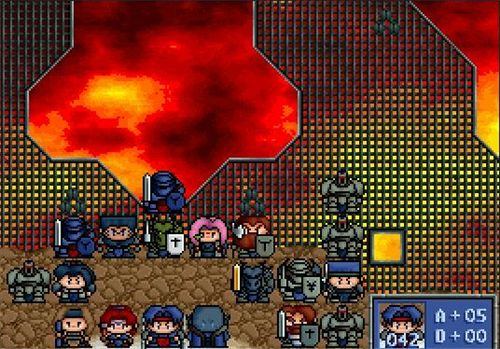
亚雷斯和老爹别走太上去了，免得把左右两边的龙骑士给引了下来，等最上面不出援兵时，再把两边的龙骑士先后引下来干掉
这关武器我拿的是亚雷斯用的战神戟，老爹可以买到攻380的，400跟380没多大区别，剩下的几个个力量药水也都给了亚雷斯
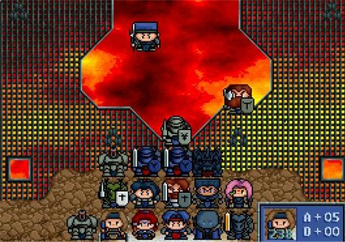
第二十七关
把亚雷斯和老爹传上去，注意剩两个队长时，要尽量控制他们的血量，让他们在两个回合内一起死掉，这样援军就不会对索尔造成威胁
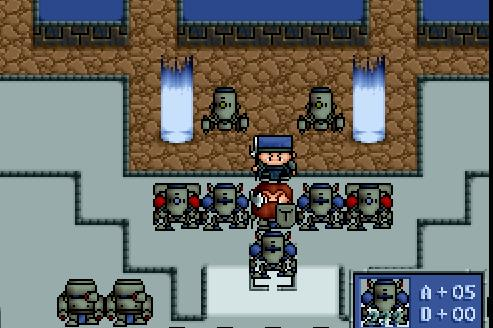
第二十八关
这关开战前所有人都会复活（我懒，留到下关再死）
直接传过去挂掉那两个队长
第二十九关
先用希尔法把亚雷斯传到上面去，主要任务是杀中间路上的光速炮和机械队长。然后把该死掉的都跑过去送死
老爹站路口中间，玛琳在他旁边，只容老爹旁边一条道路可以通人，这样就可以堵住路了，老爹杀那些想通过的人，玛琳用防御术给自己加防，估计21级加上以前吃的耐力药水，差不多可以不然那些机兵攻击
等那左右两边的小兵杀完后，用希尔法把大家都传到上面去，传上去前，亚雷斯也把上面一部分小兵清理差不多了（有很多兵是原地不动的），要小心的是悠妮站那位置后，出现的四批援兵
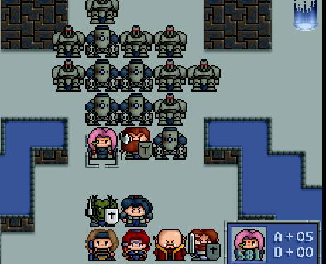
第三十关
总算结束了，随便怎么打，传送过去或慢慢打都可以
这关我的7人组合等级分别为：亚雷斯：40；老爹：40；玛琳：21；巴拿罗西亚：19；罗兰：15；卡里斯：20；罗德曼：20
合计175级，不多不少，刚好，呵呵~ |